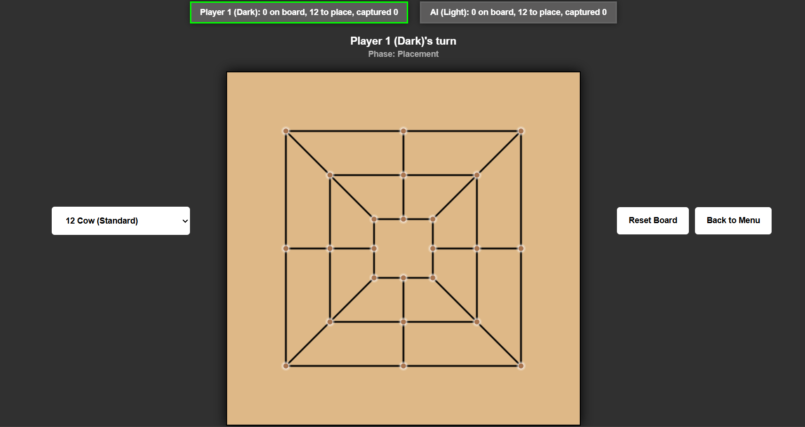
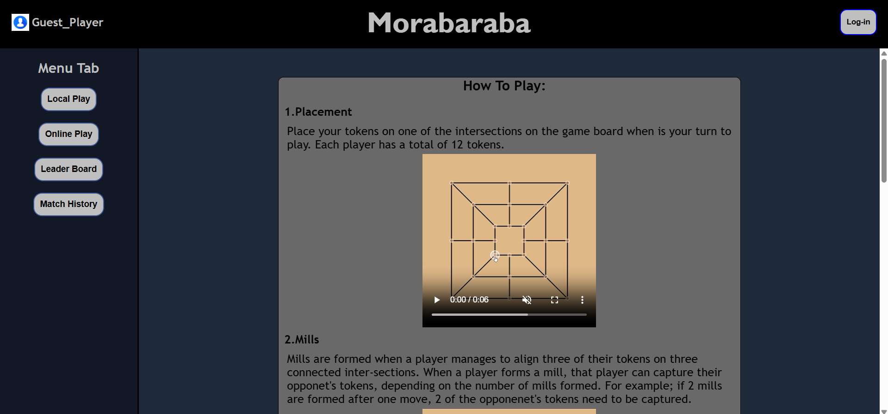
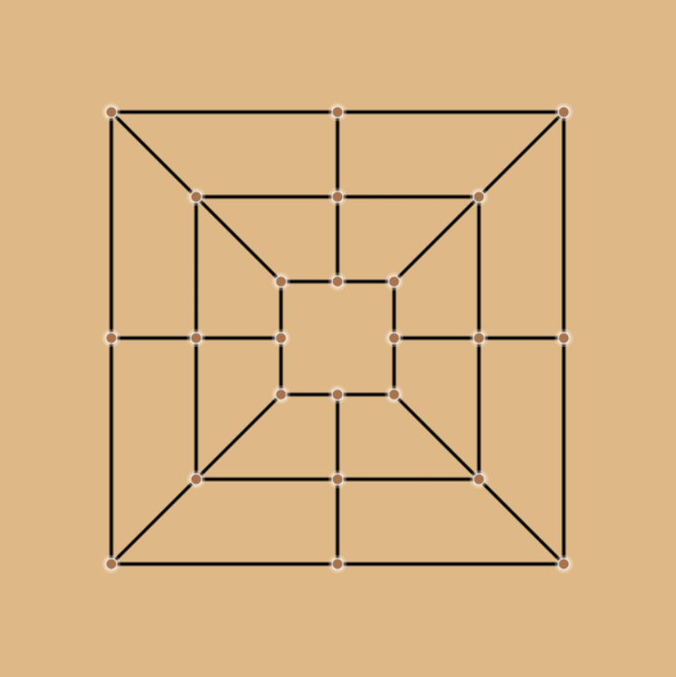
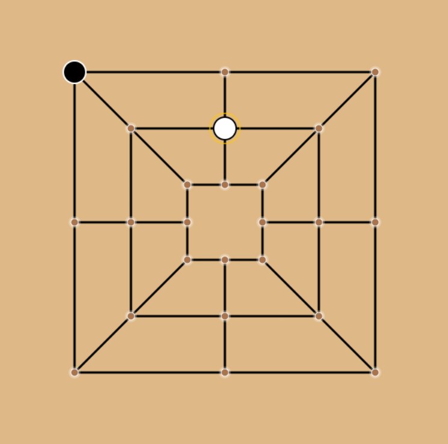

Web-based Morabaraba
Project Information
Live-Demo: https://morabaraba-game-d7h0c8fvg5dbawhs.southafricanorth-01.azurewebsites.net/
Role: Frontend developer
Timeline: Feb 2026 - May 2026
Project Overview
The aim of this project was to implement a web-based version a Morabaraba board game. The Minimum Functionalities for the Web-based platform required include:
- Two users log-in and play against each other;
- Visual presentation of the board;
- Placement and Movement functionalities of cows;
- And enforcing game rules;
After the implementation of the minimum functionalities, a total of 10 extra features were added to the prototype. These includes:
- Tutorials for beginners;
- A players leaderboard;
- Match history;
- Elo rating system;
- AI opponent game mode;
- Undo functionality;
- Move hints;
- Statistics tracking;
- Mobile-response design;
- Supporting different game varients (12 pieces, 9 pieces,6 pieces);

The reason for these specific extension features was to improve the user's gameplay expirience and allow users to be able to track their progress. Since I was working on the frontend, I implemented web features like; the main menu layout and its functionalities, feedback features in the main menu (like the responsiveness of buttons when players hover their mouse oo top of them), leaderboard . And for the game page, I worked on the board representation, pieces rendering, turn indicator system, reset board button and Back to Main Menu and its functionalities, and the End-game screen.
Technologies used for the frontend include:
- HTML;
- CSS;
- JavaScript;
- Visual Studio Code Editor;
Implementation process
As the frontend developer of the project, one of the challenges I faced was implementing the right layout for the main menu and implementing the board and pieces, with movement and placement logic.
1. Main Menu Layout
The Main Menu page is a page that users land on when they open the site. This page allows users to navigate to and access site features like Game Modes users would like to play (Local two player, AI opponent and Online two player mode) and other web features like a Leaderboard (shows every player's Elo rating, total games played, total wins, loses and draws obtained by the users), Game History (shows outcomes obtained by the user from their recent matches together with the usernames of their opponents), Tutorial for beginners (with demonstration videos), Log-in functionalities, and showing users if they logged in or not.
Challenges:
1. Layout
When the main menu was implemented, at first it was single columbed, only had buttons centered on the main menu page with a "Morabaraba" text above the buttons. The buttons and text were inside a box-like container making the page look more like a main menu and not just buttons and text floating in the middle of a page. When it comes to colors, the main menu had a brown theme showing that its a website for a board game.

But when the website was given to external users to test its functionalities, most of them did not like how the main menu looked. They said the website felt old and did not feel like it is a game website. The website did not excite players and did not make them look forward to playing the game. So the main menu had to be reconstructed, and this time we went for a morden look. To archieve this, right colors and layout structure had to be used to make the website feel morden. For the structure, we made the site have a sidebar, header section and a main section. And when it came to colors, we needed colors that will make the website feel clean and morden. Our final options for colors includes:
- #3d58G8 for the Pop-up modals;
- #121826 for the sidebar;
- #1E2A3A for the main section (Background of the main menu);
When it came to the positioning of main menu elements like buttons and text, we placed buttons that focus on game modes and features like the Leaderboard and Game History on the sidebar section of the website. And the when it comes to the "Morabaraba" text, the log-in/log-out button and the username display text; these elements were placed on header section of the website. And for the Main section of the Main Menu, we wanted to place important content that players would need to see when they entered the website. That's when we decided to put the tutorial with demonstration videos on the main section of the Main Menu.
2. Board rendering and movement/Placement logic
The requirements for the board was to draw a board with 24 intersections, with three concentric squares. Players should only interact with the intersection of the board when they place or move a cow. Since I was focusing on the frontend, I just had to draw the board and player cows, and also implement the placing logic of cows.
Challenges:
1. Drawing the board

- beginPath function : This function starts a new path of the line and takes no parameters.
- moveTo function : This function is used to tell the canvas where to start drawing the line. The function takes two parameters, which are the x and y intercepts of the starting point.
- lineTo function : This function is used to define the end point of the line. The function also takes two parameters, which are the x and y intercepts of the end point of the line.
- stroke function : This function renders the line on canvas, making it visible. This function does not take parameters.
For diagonal lines:
To draw the diagonal lines of the board, I just had to connect corresponding corners of the three concentric squares. For example; one diagonal line should connect the top-right corners of all the squares (start from the top-right corner of the outter square and end on the top-right corner of the inner square). To do this, First I called the beginPath function to start a new path. Then I called the moveTo function and imputed the x and y coordinates of the top-right corner of the outter square. For the lineTo function, I inputed the x and y coordinates of the top-right corner of the inner square. Then I called the stroke function to make the line visible. This process was repeated for the other three diagonal lines, but using the other three corners. Then for the vertical and Horizontal lines of the board, a similar approach was used, but instead of using the coordinates for corners of the squares, the coordinates for the midpoints of the sides of the squares were used. For the vertical lines, the midpoints for the top and bottom side coordinates were used, and for the horizontal lines the midpints of the right and left sides were used. This means two vertical lines and two horizontal lines were drawn.
2. Placement Logic
